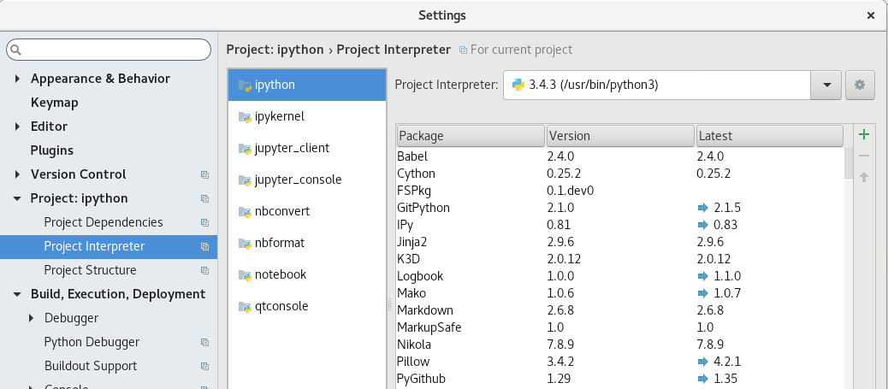

I can't import it!
Have you installed a Python package, but now you can't import it? Or can you import it when you run code one way, but not when you run code another way?
These are common problems, and this post is an attempt to explain what's going on and how you can fix it. If someone has sent you a link here, they're not trying to be rude: we can help more people more effectively by sharing a detailed explanation than by writing a short explanation each time.
Lots of Pythons
There's probably more than one copy of Python on your computer. When you run code in different ways, it might get run by different Pythons. To see which Python is running your code, run:
import sys print(sys.executable)
On my laptop, all of these are different Pythons (and they aren't all of them):
- /usr/bin/python (system Python 2)
- /usr/bin/python3 (system Python 3)
- /home/takluyver/miniconda3/bin/python (Python in conda)
- /home/takluyver/miniconda3/envs/py36/bin/python (a separate conda environment)
Each conda environment, virtualenv or pyenv you create is a separate Python. But you can also have different names for the same Python -- e.g. /usr/bin/python3 is the same as /usr/bin/python3.5 on my laptop (it's a 'symlink').
Each Python installation or environment has its own package folder. When you install a package, it's being installed for one particular Python, which might not be the one you are trying to load it from.
You can also see all of the places that import will look for a module by running:
import sys print(sys.path)
What can I do?
First, use the code above to find which Python is running your code.
Option 1: Install the package for the same Python you're using.
With pip, this is easy:
path/to/python -m pip install some_package
If you want to install it with conda, activate the conda environment containing the Python you're using, and then run conda install some_package.
Option 2: Switch to use a Python where the module you want is installed.
It's hard to provide instructions for this, because it depends on the tools you're using. If you're using an IDE, look in the settings. Here it is in Pycharm, for instance:

Comments
Comments powered by Disqus